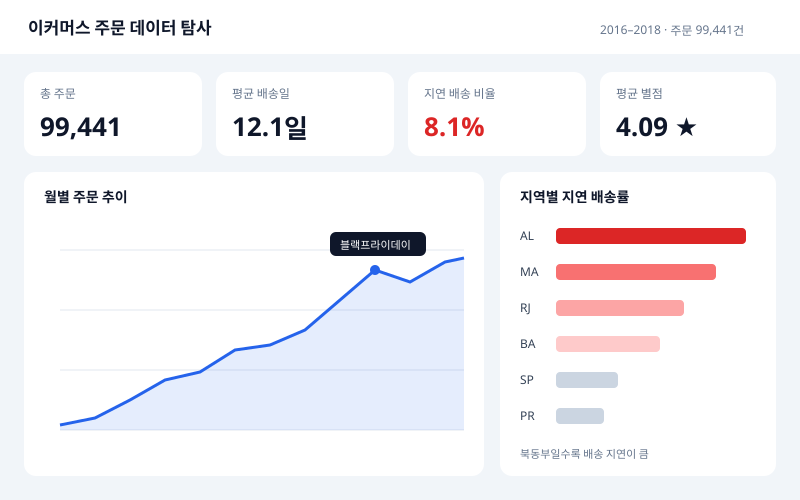

스타일 1포트폴리오 스타일 참고 예시
GitHub Pages로 만든 포트폴리오 3가지 스타일입니다. 마음에 드는 스타일을 골라 내 내용으로 바꿔 보세요.
 스타일 2
스타일 2 스타일 3
스타일 3내 포트폴리오로 바꾸는 법 — 원하는 스타일 폴더의 index.html을 복사해 이름·소개·프로젝트 글을 바꾸고, assets/mock 그림 자리에 내 화면 캡처를 넣으면 됩니다.
GitHub Pages로 만든 포트폴리오 3가지 스타일입니다. 마음에 드는 스타일을 골라 내 내용으로 바꿔 보세요.

스타일 1스타일 2스타일 3